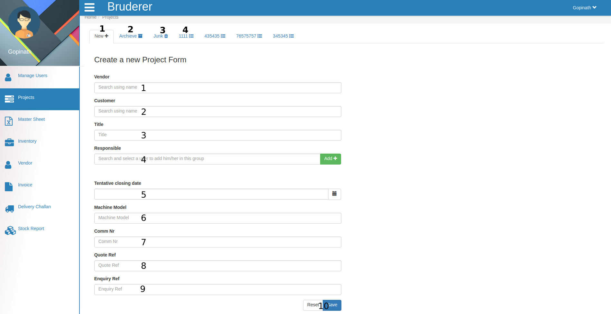
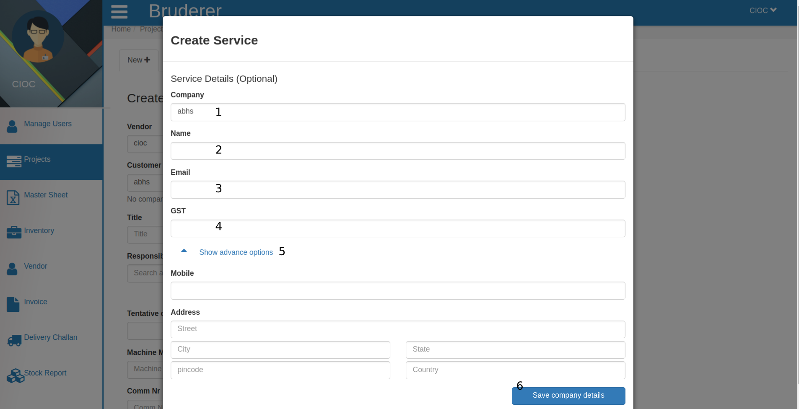
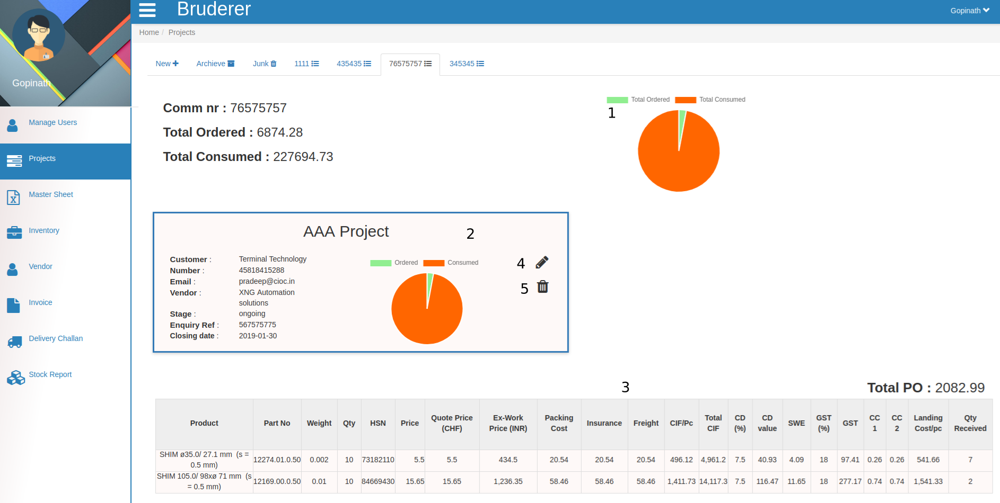
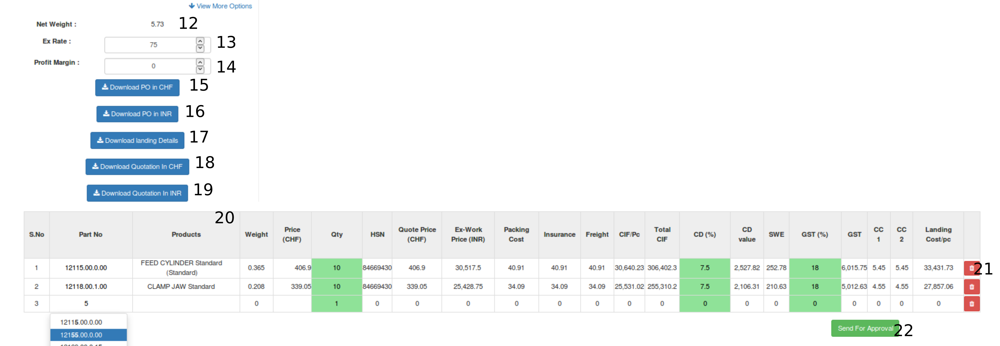
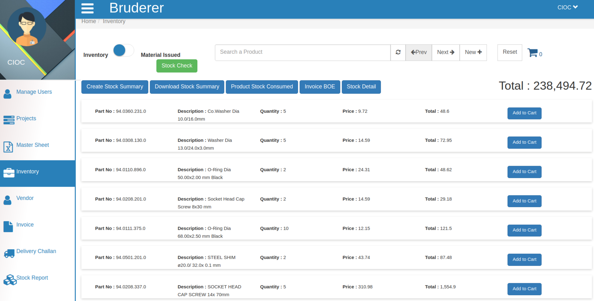

Projects¶

This is projects portal you can call it products as well. Do you want to create new project ?
- Click on New and just follow the below given steps and you will see a new project (PO) in your inventory.
- Search and select the name of Vendor in this text area, it will be appear according to your vendor list from vendor portal means that here you can search only those vendor which you had created from your vendor portal.
- Fill Customer Name here if that customer is already in your list then it will come as popup and you can select it else you can add them as your customer by clicking on new button.
Note
New button appears beside Customer name, only when the new customer entry happens .

In the above tab fill the customer details, it is optional but if you want to keep detail of this customer
- Enter company name here.
- Enter customer name .
- Enter customer’s Email here.
- Here enter the gst % .
- Here enter the mobile number and address in below form and
- Click on Save Company Details to save these above details.
- Give the Title to your project.
- Search and select the Responsible User name for this project and click on Add button to ADD him/her to this project.
- Set the Tentative Closing Date for this project, either by selecting through Date Picker (which is just beside the text area) or just fill the date in this text area in DD-MM-YYYY format.
- Here fill the Machine Model , it means product identification number.
- Here fill the Comm nr (commission number).
- Here enter the Quote Reference .
- Here enter the Inquiry Reference .
- Click on Reset if you want to change this project information else save it by clicking on Save button.
- Click on Archive to see your archived projects.
- Once you moved your project in junk it will be deleted after some period of time.
- This is one of commission numbers you can check it’s details by clicking on it.

In the above tab you can see
- Here you see Total ordered and Total consumed graph .
- Here you see only that particular project details .

Here you can see elaborated details of that particular project like..
- Here you can see the Project Title , Customer name , Closing Date , Machine Model , Comm Nr. , Quote Reference , Quote Reference , Enquiry Reference and can change as well.
- Here you can see the Name of Responsible Person and their ID .
- Here you can see the Revision number of that project.
- Here you can select the Currency Type like CHF, INR, EUR, USD, JPY, GBP, AUD, CAD, ZAR ( we can addsome more currency type according to you demand) and according to that the invoice and price will be generated.
- Here enter the PO Number (Purchases Order Number).
- Here you can see and change the PO Date for this project, either by selecting through Date Picker (which is just beside the text area) or just fill the date in this text area in DD-MM-YYYY format.
- Here you can see and change the Quotation Number .
- Here you can see and change the Quotation Date for this project, either by selecting through Date Picker (which is just beside the text area) or just fill the date in this text area in DD-MM-YYYY format.
- Here you can see and change the Invoice Number .
- Here you can see and change the BOE Number (Bill of exchange number).
- Here you can see and change the several values like Ex Work Price(can not change from here) , Packing , Insurance , Freight , Assemble Value , Gst and Clearing charges .

And
- Here you can see the Net Weight .
- Here you can see and change the Ex Rate .
- Here you can see and change the Profit Margin .
- Here you can Download PO in your selected currency type which you had selected in above at point no 4.
- Here you can Download PO in INR means in the terms of Indian currency.
- Just click here to Download landing Details .
- Here you can Download Quotation in your selected currency type which you had selected in above at point no 4.
- Here you can Download Quotation in INR means in the terms of Indian currency.
- Here in this table you can see and change product details.
- By clicking on delete button you can Delete that particular row from the table.
- After this click on Send For Approval button and it will be send for approval.

And you will see the above tab here
- if You are OK with project details click on Approve button it will ask you for confirmation click on yes to approve.
- if You are not OK with project details click on Reject button it will ask you for confirmation click on yes to reject. in the next tab click on Save it will ask you for confirmation click on yes and product will be added into your inventory.
Note
you will see that the Save button will be transform into Archive button.

Above is added product in inventory.
- Here you see the full details in tabular form for that commission number.
- By clicking on pencil button you can edit that project details which is similar to creating project only difference is here the details are already filled you have to change these value and click on save and that project details will be updated.
- By clicking on Delete button you can delete the project.
Note
For one commission number there can be many projects.